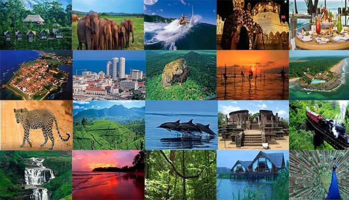
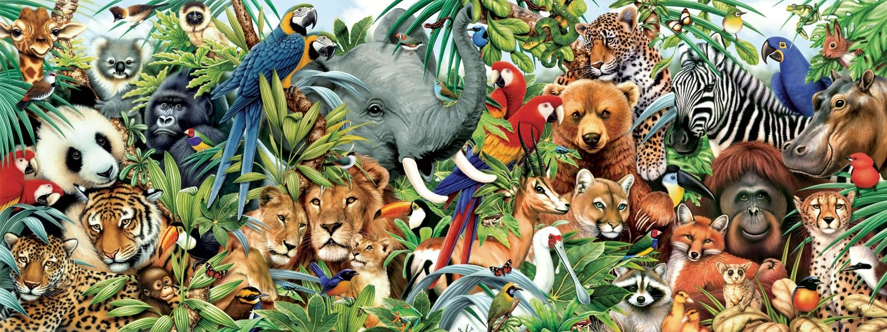
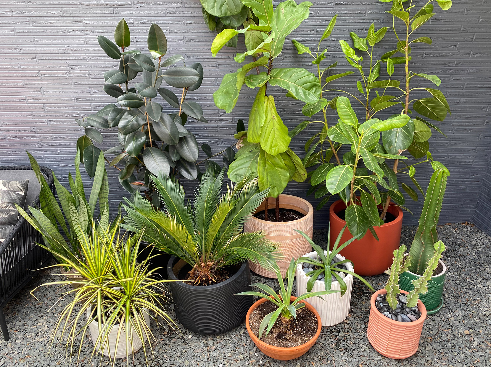
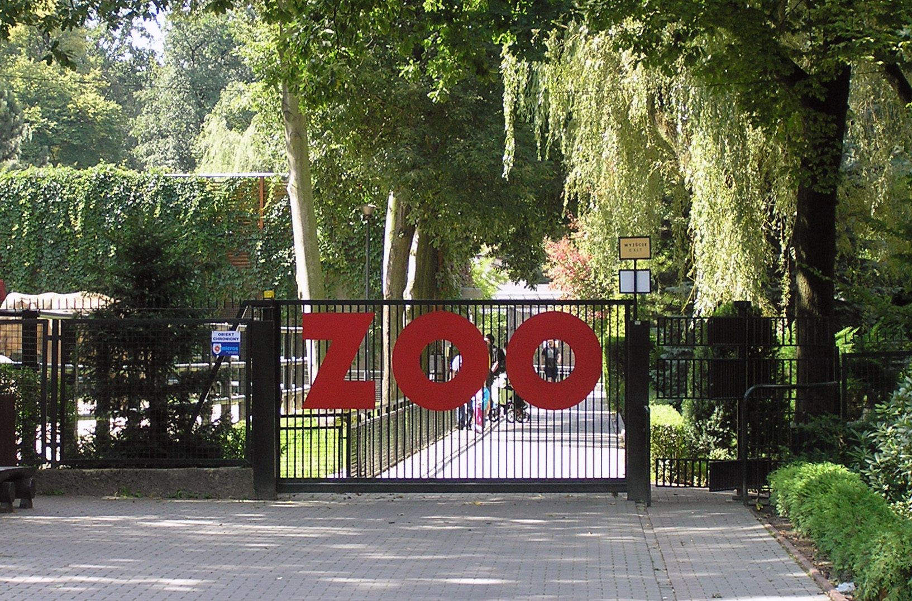

ABOUT SRI LANKA
Formerly known as Ceylon, and officially the Democratic Socialist Republic of Sri Lanka, is an island country in South Asia. It lies in the Indian Ocean, southwest of the Bay of Bengal, and southeast of the Arabian Sea; it is separated from the Indian subcontinent by the Gulf of Mannar and the Palk Strait. Sri Lanka shares a maritime border with India and the Maldives. Sri Jayewardenepura Kotte is its legislative capital, and Colombo is its largest city and financial center. Today, Sri Lanka is a multinational state, home to diverse cultures, languages, and ethnicities. The Sinhalese are the majority of the nation's population. The Tamils, who are a large minority group, have also played an influential role in the island's history. Other long-established groups include the Moors, the Burghers, the Malays, the Chinese, and the indigenous Vedda.

ANIMALS
Currently, Dehiwala Zoo houses 72 species of Mammals, 65 species of Birds, 31 species of Reptiles, 89 species of Fish, 03 families of Amphibians and 30 species of Butterflies etc. The total number of animals varies from 2500-3000 due to breeding and free living colonies of birds.

PLANTS
The basic purpose for the maintenance of these gardens was beauty, aesthetic sense and the calm and quite environment which a secluded place full of greenery and colourful flowers provide. With the advent of the era of scientific development most of botanical garden started keeping interesting exotic plants for the purpose of exhibition and education. A number of botanical gardens become institutions of scientific research and undertook the job of cataloguing and classification of plants. Many of them have contributed significantly to our knowledge of taxonomy and systematic of plant life.

THE ZOO
The Dehiwala National Zoo, which has a remarkable collection of exotic and indigenous fauna, is one of the oldest Zoos in Asia. The Zoo in Sri Lanka is widely known as Colombo Zoo all over the world. Annually, over one and half million local and foreign tourists visit the Zoo. And over 2000 students and groups of students from schools and universities visit the Zoo for educational purposes. The Zoo is trying to keep the pace with the changing world. It has been involved in some major redevelopment programs with the aim of enhancing the overall image of the Zoo while providing maximum facilities for animals and the visitors.
VISITORS' RULES
- The Dehiwala Zoo is a smoke-free park. Smoking permitted in designated areas only.
- Visitors age 17 and under must be accompanied by an adult chaperone (age 18+).
- MASKS ARE REQUIRED FOR YOUR VISIT regardless of your vaccination status.
- Do not feed our animal residents or throw things in exhibits, and stay on public paths at all times.
- Deposit trash and recycling in designated receptacles.
- Do not feed, touch or chase roaming peacocks or local wildlife that you see on grounds. Treat them
kindly and view from a safe distance. Please respect and leave untouched the plants and trees
around you. - Use of the following devices are forbidden:
- Record players
- Radios
- Musical instruments
- Horns